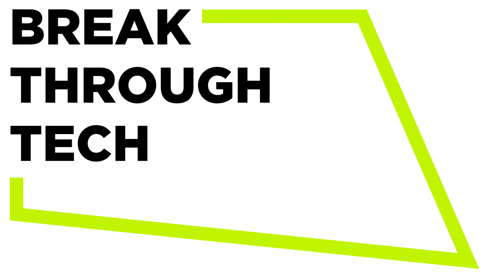
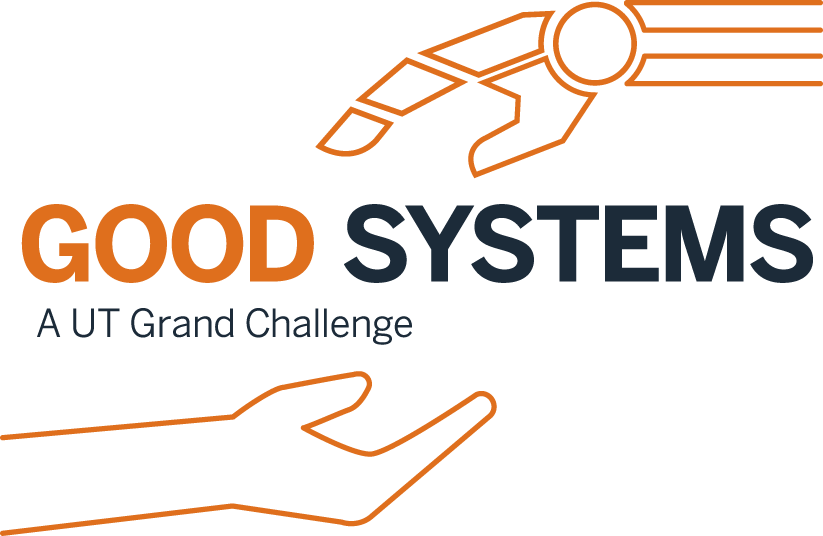

Urban Tech Hub, Cornell University
Urban Tech Hub focuses on evaluating and enhancing urban technologies through advanced analytics.
As a Graduate Research Assistant, contributed to developing NLP tools and optimizing 311 call responses using machine learning.

Break Through Tech AI, Cornell University
The initiative aims to foster diversity in technology fields through targeted education.
Engaged as a Teaching Assistant, taught machine learning to underrepresented groups and assisted in global projects.
Urban Information Lab
The UIL leverages cutting-edge information technologies to optimize the design and planning of urban spaces. Founded in 2013, the lab specializes in big data analytics focused on urban development.
I was the lead developer on close collaborations with the City of Austin, the Texas Advanced Computing Center, and the National Science Foundation.

Good Systems, University of Texas at Austin
Good Systems is a leading initiative focused on the ethical design and societal impact of AI and machine learning.
Participated as an Undergraduate Research Assistant, where machine-learning algorithms were developed for predicting city development and implementing real-time fire tracking maps. Additionally, served as a Program Assistant in the Department of Computer Science, aiding in the education of Java applications and data visualization for over 50 students.